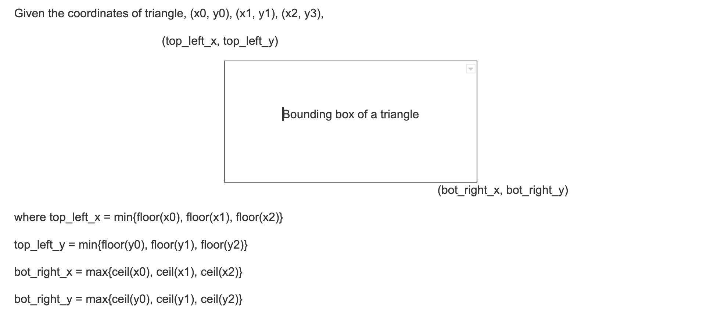
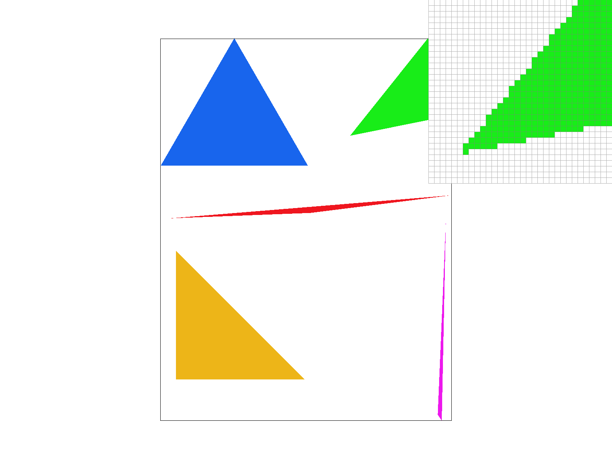

Overview
Give a high-level overview of what you implemented in this project. Think about what you've built as a whole. Share your thoughts on what interesting things you've learned from completing the project.
Section I: Rasterization
Part 1: Rasterizing Single-Color Triangles
How to rasterize a triangle:
First, locate the x and y coordinates of the top left corner and bottom right corner of the bounding box for the triangle. The coordinates of the bounding box can be calculated by finding the minimum and maximum of the x and y coordinates of the triangle, respectively. As shown below:
|  |
Second, iterate through the samples in the bounding box and perform the point-in-triangle test to determine if the sample is inside the triangle, meaning if the line equations of the 3 edges of triangle with the sampled point as input result in greater than or equal to zero. Finally, if the sampled point satisfies the point-in-triangle test, it is rasterized.
Explain how the algorithm is no worse than one that checks each sample within the bounding box of the triangle.
The algorithm checks each sample within the bounding box of the triangle. The coordinates of the top left corner and the bottom right corner of the bounding box are found by finding the minimum and maximum of x and y coordinates respectively. After that, 2 for loops are implemented to iterate every sample from the top left corner to the bottom right corner of the bounding box to check if the sample is within the triangle and rasterize the point if it is. The runtime is linear in terms of the size of the bounding box of each triangle in the image.

|

|

|

|
|

|
anzeliu.github.io/cs184-proj-webpage/proj1